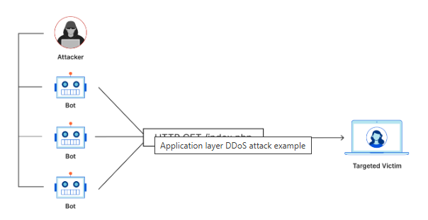
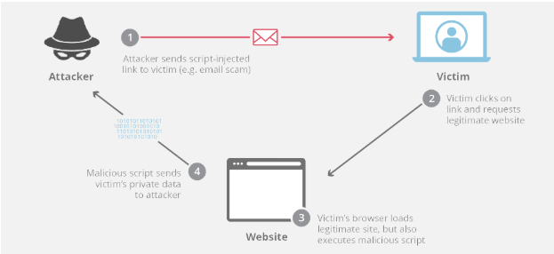
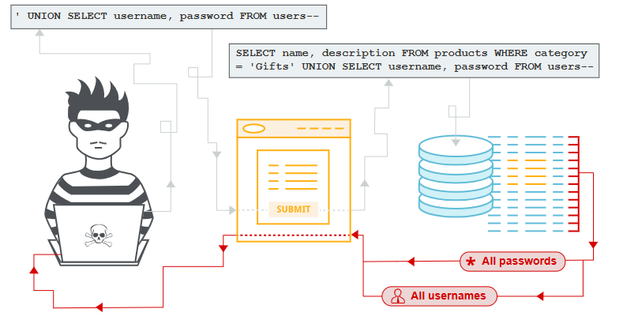
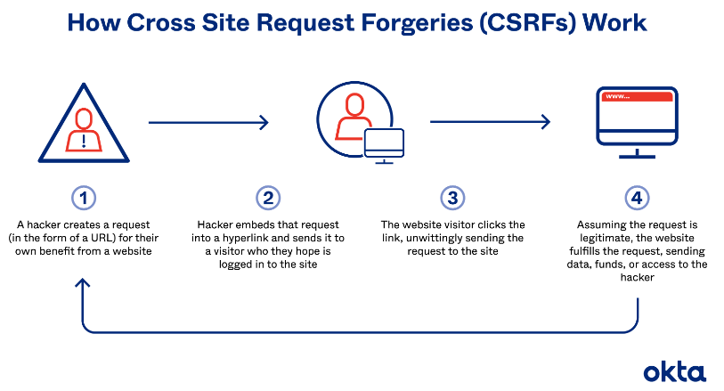
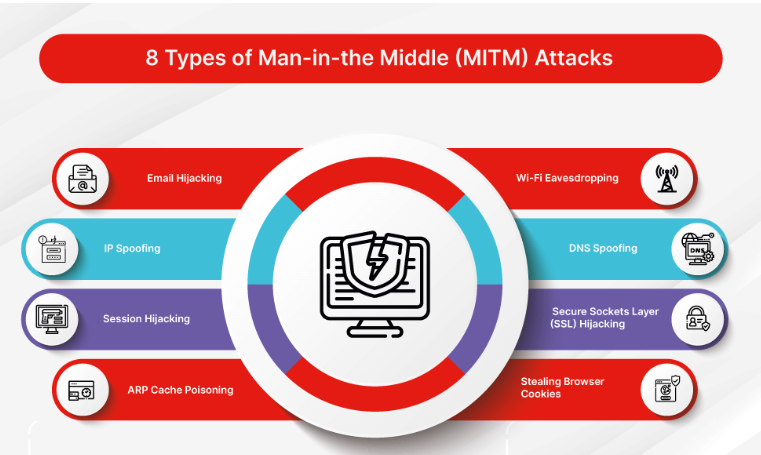
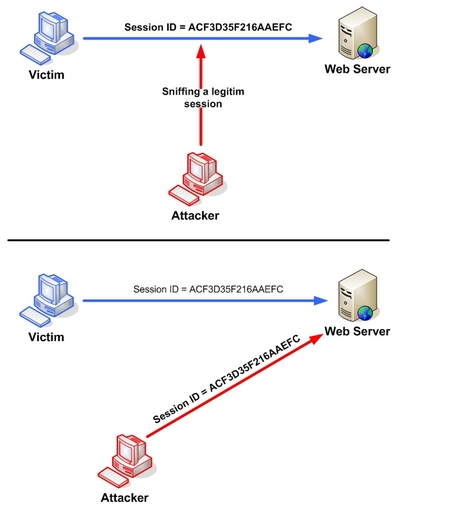
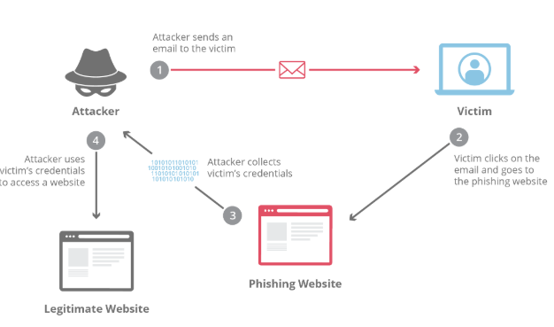
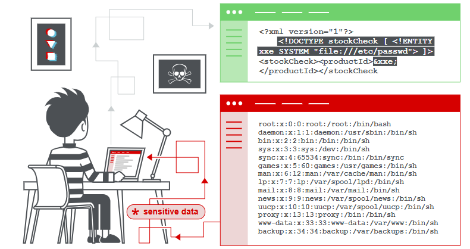
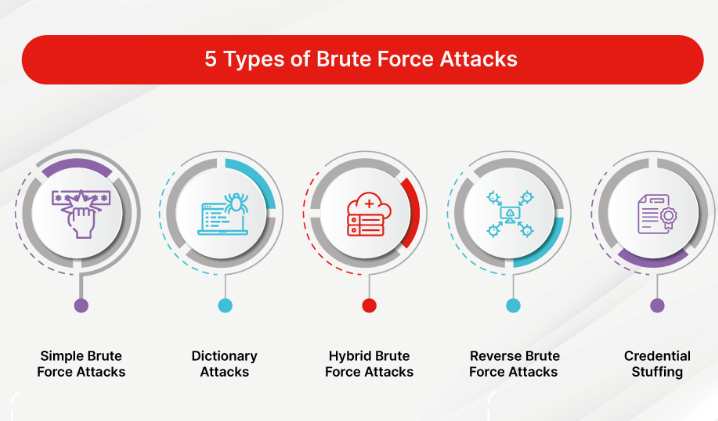

| Name |
Web Attacks |
1. DDoS attack

Source: What is a DDoS attack?
|
DDoS attack is a malicious attempt to disrupt the normal traffic of a targeted server, service or network by overwhelming the target or its surrounding infrastructure with a flood of Internet traffic.
DDoS attacks achieve effectiveness by utilizing multiple compromised computer systems as sources of attack traffic.
From a high level, a DDoS attack is like an unexpected traffic jam clogging up the highway, preventing regular traffic from arriving at its destination.
Referrence: What is a DDoS attack?
|
2. Cross Site Scripting

Source: What is cross-site scripting?
|
Cross-site scripting (XSS) is an exploit where the attacker attaches code onto a legitimate website that will execute when the victim loads the website.
That malicious code can be inserted in several ways. Most popularly, it is either added to the end of a url or posted directly onto a page that displays user-generated content.
In more technical terms, cross-site scripting is a client-side code injection attack.
Referrence: What is cross-site scripting?
|
3. SQL Injection

Source: What is SQL injection
|
SQL injection (SQLi) is a web security vulnerability that allows an attacker to interfere with the queries that an application makes to its database.
This might include data that belongs to other users, or any other data that the application can access.
In some situations, an attacker can escalate a SQL injection attack to compromise the underlying server or other back-end infrastructure.
Referrence: What is SQL injection
|
4. Cross-site request forgery (csrf)

Source: CSRF Attack: Cross-Site Request Forgery Definition & Defense
|
A CSRF (cross-site request forgery) tricks authenticated users into granting malicious actors access through the authentic user's account.
During a cross-site request forgery (CSRF) attack, a hacker does something under a victim's authentication.
A user logs into a website, and somehow, that person's login does all sorts of things that the person would never do willingly.
Referrence: CSRF Attack: Cross-Site Request Forgery Definition & Defense
|
5. Man-in-the-Middle (MitM)

Source: Man-in-the-Middle Attack: Types And Examples
|
A man-in-the-middle (MitM) attack is a form of cyberattack in which criminals exploiting weak web-based protocols insert themselves between entities in a communication channel to steal data.
None of the parties sending email, texting, or chatting on a video call are aware that an attacker has inserted their presence into the conversation and that the attacker is stealing their data.
While most cyberattacks are silent and carried out without the victims' knowledge, some MitM attacks are the opposite.
Referrence: Man-in-the-Middle Attack: Types And Examples
|
6. Session hijacking attack

Source: Session hijacking attack
|
The Session Hijacking attack consists of the exploitation of the web session control mechanism, which is normally managed for a session token.
The most useful method depends on a token that the Web Server sends to the client browser after a successful client authentication.
The Session Hijacking attack compromises the session token by stealing or predicting a valid session token to gain unauthorized access to the Web Server.
Referrence: Session hijacking attack
|
7. Phishing attack

Source: What is a phishing attack?
|
“Phishing” refers to an attempt to steal sensitive information, typically in the form of usernames, passwords, credit card numbers, bank account information or other important data in order to utilize or sell the stolen information.
By masquerading as a reputable source with an enticing request, an attacker lures in the victim in order to trick them, similarly to how a fisherman uses bait to catch a fish.
The most common examples of phishing are used to support other malicious actions, such as on-path attack and cross-site scripting attacks.
Referrence: What is a phishing attack?
|
8. Spoofing
Source: What Is Spoofing?
|
Spoofing is a type of cybercriminal activity where someone or something forges the sender's information and pretends to be a legitimate source, business, colleague, or other trusted contact for the purpose of gaining access to personal information, acquiring money, spreading malware, or stealing data.
The most common type of spoofing is done through email. Similar to phishing scams, spoofing emails can be hard to detect.
Typically, a false sense of urgency is conveyed in the way spoofing attacks are written, which often is the reason why end users react to them.
Referrence: What Is Spoofing?
|
9. XML external entity (XXE) injection

Source: XML external entity (XXE) injection
|
XML external entity injection (also known as XXE) is a web security vulnerability that allows an attacker to interfere with an application's processing of XML data.
It often allows an attacker to view files on the application server filesystem, and to interact with any back-end or external systems that the application itself can access.
In some situations, an attacker can escalate an XXE attack to compromise the underlying server or other back-end infrastructure, by leveraging the XXE vulnerability to perform server-side request forgery (SSRF) attacks.
Referrence: XML external entity (XXE) injection
|
10. Brute Force Attack

Source: What Is A Brute Force Attack?
|
A brute force attack is a hacking method that uses trial and error to crack passwords, login credentials, and encryption keys.
It is a simple yet reliable tactic for gaining unauthorized access to individual accounts and organizations’ systems and networks.
The hacker tries multiple usernames and passwords, often using a computer to test a wide range of combinations, until they find the correct login information.
Referrence: What Is A Brute Force Attack?
|